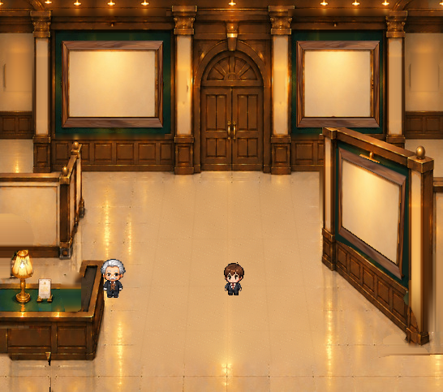

壁灯4点を独立素材化した比較
左右外側の壁灯2点と右手前の壁灯2点です。各灯は「器具本体」と「発光」の2層のみです。灯りを消した壁は原画からの推定修復で、美術確認が必要です。
照明合成画像を準備しています
元の画面との比較


本素材は最終美術承認前の候補です。背景修復に元画像にない画素が含まれるため、器具を元に戻しても元画像との画素完全一致は主張しません。天井の灯列と受付ランプはまだ対象外です。ゲーム本体も変更していません。
左右外側の壁灯2点と右手前の壁灯2点です。各灯は「器具本体」と「発光」の2層のみです。灯りを消した壁は原画からの推定修復で、美術確認が必要です。
照明合成画像を準備しています

本素材は最終美術承認前の候補です。背景修復に元画像にない画素が含まれるため、器具を元に戻しても元画像との画素完全一致は主張しません。天井の灯列と受付ランプはまだ対象外です。ゲーム本体も変更していません。